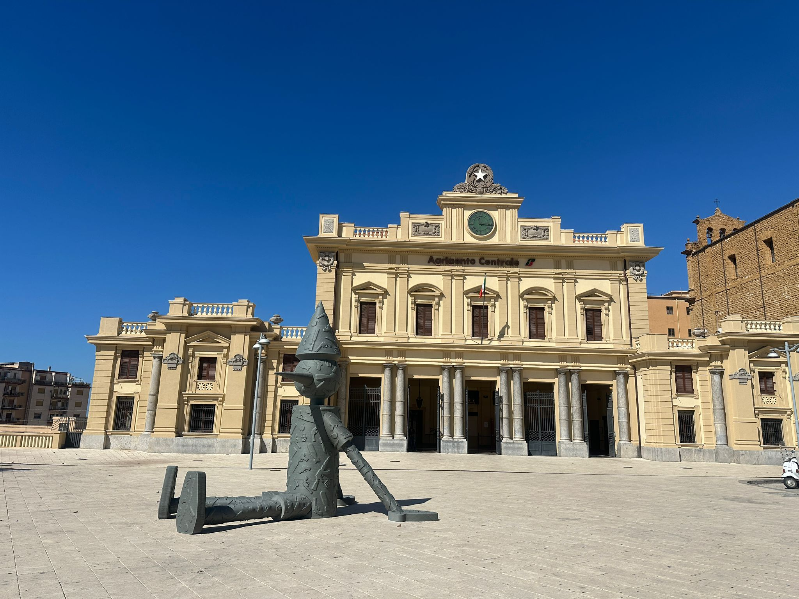
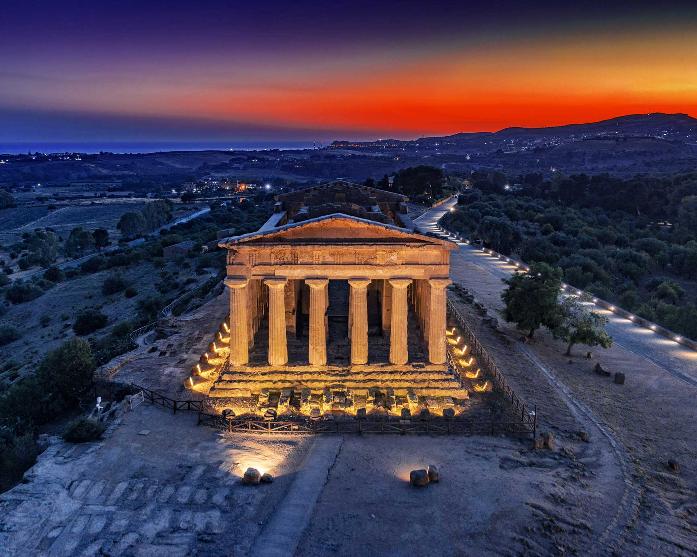

Piazza Marconi,
Agrigento

Piazza Marconi
La Piazza Marconi è uno dei principali nodi urbani della città di Agrigento e rappresenta un punto di passaggio fondamentale tra il centro storico e le aree più moderne. A differenza delle piazze monumentali e turistiche della città, Piazza Marconi ha una funzione soprattutto pratica e quotidiana, diventando uno degli spazi più vissuti dai residenti.
Si tratta di una piazza fortemente legata alla mobilità urbana: qui si concentrano fermate di autobus e collegamenti che permettono di raggiungere facilmente sia le zone interne della città sia i percorsi verso la costa e la celebre Valle dei Templi. Questo la rende un punto strategico per chi si muove ad Agrigento, sia per motivi di lavoro che per turismo.
L’ambiente è dinamico e sempre in movimento: durante la giornata la piazza è attraversata da studenti, pendolari e visitatori, mentre nelle ore di punta diventa un vero centro di scambio urbano. Intorno si trovano attività commerciali, uffici e servizi che contribuiscono a renderla funzionale e costantemente attiva.
Dal punto di vista urbanistico, Piazza Marconi svolge un ruolo di collegamento tra diverse aree della città, in particolare con il vicino sistema di piazze istituzionali e culturali come Piazza Luigi Pirandello. Questa posizione la rende uno degli spazi più importanti per comprendere la struttura moderna di Agrigento, che si sviluppa tra il centro storico e le nuove direttrici di espansione.
Una curiosità interessante è proprio la sua natura “di passaggio”: non è una piazza pensata per la sosta turistica, ma per la connessione e il movimento, e proprio per questo rappresenta un aspetto autentico della vita quotidiana agrigentina.


Teatro Pirandello
Storico teatro cittadino, punto di riferimento culturale e artistico della città.

Via Atenea
La principale arteria del centro storico, ricca di negozi, locali e scorci caratteristici della vita cittadina.

Valle dei Templi
Sito archeologico UNESCO di straordinaria importanza, simbolo assoluto della storia antica di Agrigento.